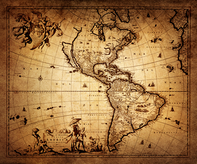

O The World tem como objetivo principal, a construção de um conhecimento continuo do ponto de vista histórico, sendo que todo dia colocamos atualizações frequentes na página para a melhor compreensão do tema estudado.
Notamos recentemente, que quanto mais o tempo passa, mais dificil se torna o interesse pessoal das pessoas em busca de uma coisa em potencial maior, em busca do conhecimento, por isso criamos o The World, para melhorar todos os seus aspectos históricos, que óbviamente sofrem efeitos no presente.
O mundo está interligado, assim como em um mapa, ou se preferir, assim como um sistema político clássico, um depende do outro, caso um caia, todo o sistema se torna vulnerável, assim é com todo o conhecimento, devemos saber quando está faltando algo, quando acrescentar algo, e como acrescentar, para que nossa estrutura e base intelígivel não caia, e nós consequentemente ficarmos para trás.

Já dizia Einstein "Tolice, e fazer sempre a mesma coisa, esperando difetentes resutados", Hoje vivemos em um contexto em que tudo não se pode fazer, e quando alguém quebra esse paradigma tentando inovar de algum jeito e fracassa, busca repetir o ato mesmo já tendo a ciência de que dará errado. Isso é tolice.
O The World vai junto com você buscar o conhecimento existente na idade méida e trazer para o cotidiano, a fim de que você aplique este mesmo conhecimento em sua vida de forma prática, tanto profissionalmente, quanto intelectualmente.